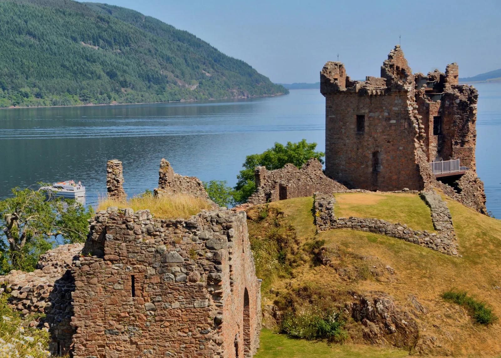

Scotland
Unicorns
Cities
Lakes in the Highlands
In Scotland, The Highlands are bisected by the fault line of Glen Mor (Glen Albyn), which is occupied by a series of lochs (lakes), the largest of which is Loch Ness, famous for its probably mythical monster.
